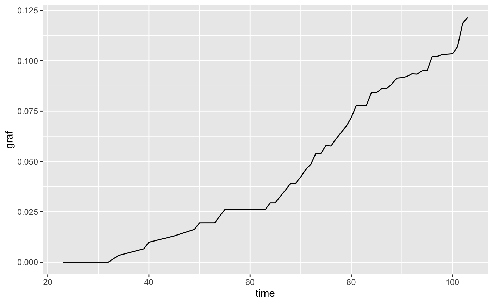
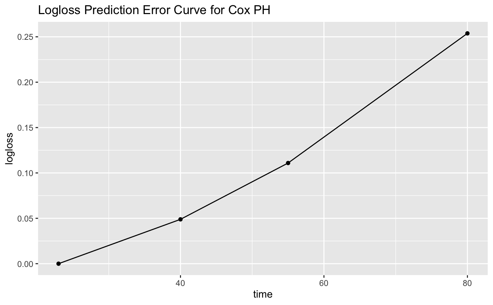
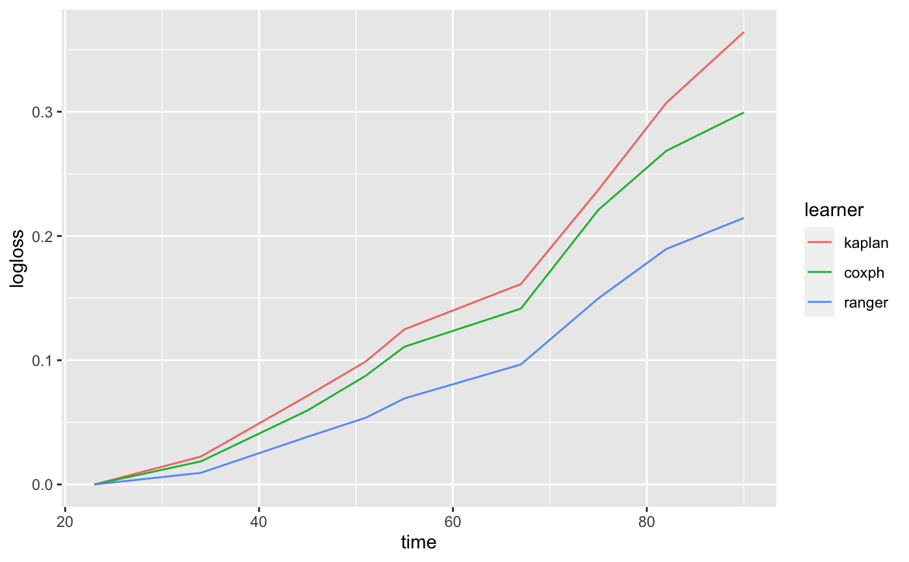

Methods to plot prediction error curves (pecs) for either a PredictionSurv object or a list of trained LearnerSurvs.
pecs(x, measure = c("graf", "logloss"), times, n, eps = 1e-15, ...) # S3 method for list pecs( x, measure = c("graf", "logloss"), times, n, eps = 1e-15, task = NULL, row_ids = NULL, newdata, ... ) # S3 method for PredictionSurv pecs(x, measure = c("graf", "logloss"), times, n, eps = 1e-15, ...)
Arguments
| x | (PredictionSurv or |
|---|---|
| measure | ( |
| times | ( |
| n | ( |
| eps | ( |
| ... | Additional arguments. |
| task | (TaskSurv) |
| row_ids | ( |
| newdata | ( |
Details
If times and n are missing then measure is evaluated over all observed time-points
from the PredictionSurv or TaskSurv object. If a range is provided for times without n,
then all time-points between the range are returned.
Examples
library(mlr3) task = tsk("rats") # Prediction Error Curves for prediction object learn = lrn("surv.coxph") p = learn$train(task)$predict(task) pecs(p)pecs(p, measure = "logloss", times = c(20, 40, 60, 80)) + ggplot2::geom_point() + ggplot2::ggtitle("Logloss Prediction Error Curve for Cox PH")# Access underlying data x = pecs(p) x$data#> graf time #> 1 0.000000000 23 #> 2 0.000000000 32 #> 3 0.003310244 34 #> 4 0.006576053 39 #> 5 0.009860458 40 #> 6 0.012955582 45 #> 7 0.016230979 49 #> 8 0.019497844 50 #> 9 0.019506719 51 #> 10 0.019509734 53 #> 11 0.022799966 54 #> 12 0.026065155 55 #> 13 0.026070550 61 #> 14 0.026076006 62 #> 15 0.026089153 63 #> 16 0.029448353 64 #> 17 0.029455487 65 #> 18 0.032718043 66 #> 19 0.035748571 67 #> 20 0.039100120 68 #> 21 0.039123326 69 #> 22 0.042192679 70 #> 23 0.045984066 71 #> 24 0.048482549 72 #> 25 0.054000521 73 #> 26 0.054007933 74 #> 27 0.057870535 75 #> 28 0.057631521 76 #> 29 0.061226788 77 #> 30 0.064363020 78 #> 31 0.067416275 79 #> 32 0.071682789 80 #> 33 0.077835811 81 #> 34 0.077800322 82 #> 35 0.077877145 83 #> 36 0.084259531 84 #> 37 0.084171110 85 #> 38 0.086166757 86 #> 39 0.086143608 87 #> 40 0.088340322 88 #> 41 0.091357225 89 #> 42 0.091591708 90 #> 43 0.092163010 91 #> 44 0.093509294 92 #> 45 0.093339626 93 #> 46 0.095007510 94 #> 47 0.095176545 95 #> 48 0.102085163 96 #> 49 0.102157571 97 #> 50 0.103072562 98 #> 51 0.103237288 99 #> 52 0.103432266 100 #> 53 0.106857151 101 #> 54 0.118450246 102 #> 55 0.121530451 103# Prediction Error Curves for fitted learners learns = lrns(c("surv.kaplan", "surv.coxph", "surv.ranger")) lapply(learns, function(x) x$train(task))#> [[1]] #> <LearnerSurvKaplan:surv.kaplan> #> * Model: survfit #> * Parameters: list() #> * Packages: survival, distr6 #> * Predict Type: crank #> * Feature types: logical, integer, numeric, character, factor, ordered #> * Properties: missings #> #> [[2]] #> <LearnerSurvCoxPH:surv.coxph> #> * Model: coxph #> * Parameters: list() #> * Packages: survival, distr6 #> * Predict Type: distr #> * Feature types: logical, integer, numeric, factor #> * Properties: weights #> #> [[3]] #> <LearnerSurvRanger:surv.ranger> #> * Model: ranger #> * Parameters: list() #> * Packages: ranger, distr6 #> * Predict Type: distr #> * Feature types: logical, integer, numeric, character, factor, ordered #> * Properties: importance, oob_error, weights #>